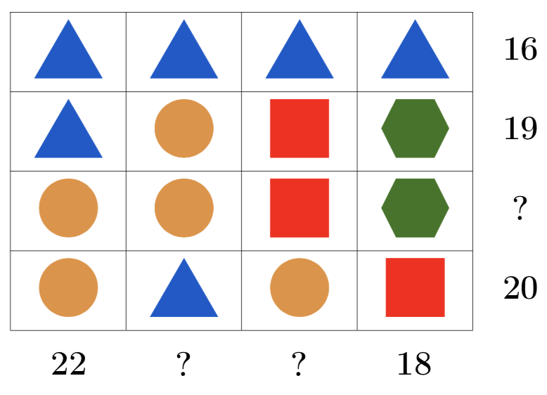
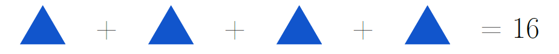
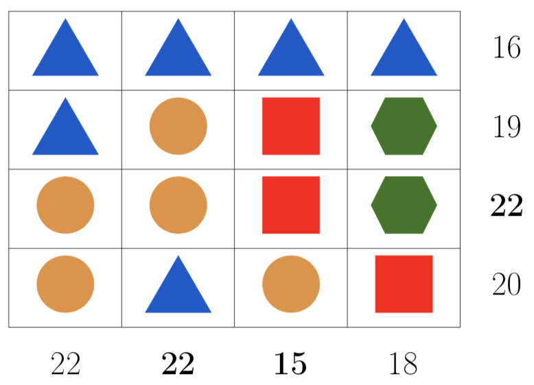

Problem
Each symbol in the grid below represents a numerical value. We know the sum of symbols for the first, second, and bottom rows and the leftmost and rightmost columns.

For example, we know from the grid:

What are the missing sums?
Not printing this page? You can fill in the values on our interactive worksheet.
Solution
There are many ways to solve this problem. Here is one approach.
Since the leftmost column has two triangles and two circles, and the column beside it also has two triangles and two circles, the sum of the columns must be the same. So the sum of the second column must be 22.
From the top row we know that the sum of 4 triangles is 16. So the value of one triangle must be \(\frac{1}{4}\) of 16 or \(16 \div 4 = 4\).
Since the value of one triangle is 4, then the sum of two triangles is \(4 + 4 = 8\). The leftmost column shows the sum of two triangles and two circles is 22, so the sum of two circles is \(22 - 8 = 14\). Therefore the value of one circle must be \(\frac{1}{2}\) of 14 or \(14 \div 2 = 7\).
Since the sum of the bottom row is formed by two circles, one triangle, and one square, and we know the sum of two circles and one triangle is \(14 + 4 = 18\), then the value of one square is \(20 - 18 = 2\).
Now we know that the sum of the third column is \(4 + 2 + 2 + 7 = 15\).
Since the sum of the second row is formed by one triangle, one circle, one square and one hexagon, and we know the sum of one triangle, one circle, and one square is \(4 + 7 + 2=13\), then the value of one hexagon is \(19 - 13 = 6\).
Now we know that the sum of the third row is \(7 + 7 + 2 + 6 = 22\).
Here is the completed grid:

Here is a second of way to find the sum of the third row without actually finding the value of the hexagon. Notice that the second and third rows have the same shapes in the last three columns, and only the first column shape is different.
Since we know that the difference between the values of a circle and a triangle is \(7 - 4 = 3\), then the sum of the third row must be 3 more than the sum of the second row, which is \(19 + 3 = 22\).
Teacher’s Notes
We could look at this problem algebraically, where we are trying to solve a linear system of equations. If we assign variable names to the shapes,
\(t =\) triangle
\(c =\) circle
\(s =\) square
\(h =\) hexagon
then we can describe the information given in the problem as follows: \[\begin{aligned} 4t &= 16 \\ t + c + s + h &= 19 \\ 2c + t + s &= 20 \\ 2t + 2c &= 22 \\ t + 2h + s &= 18\end{aligned}\]
Now, we could use algebraic techniques to find the values of these four variables.
We expect that there is a single solution to these types of problems, and it turns out that there is for this problem. However, for some problems we are not given enough information to determine specific values for each variable. For a problem with four variables, a minimum requirement to guarantee a single solution is that we need at least four equations. Also, those equations must be consistent. This means that none of the equations can contradict each other. For example, if we added the equation \(t = 7\) to the system in this problem, this would contradict equation (1). A system that is inconsistent has no solutions. This is something that students will learn more about in higher level math courses.